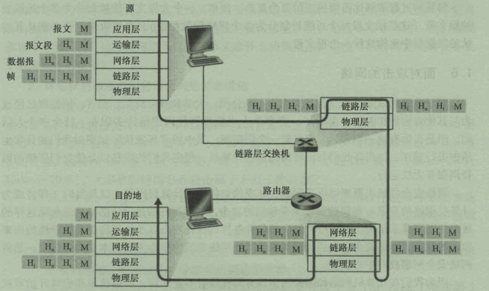

计算机网络
base
- 协议: 一个协议定义了在两个或多个通信实体之间交换的报文格式和次序，以及报文发送和/或接收一条报文或其他事件所采取的动作。
- 分组交换: 为了从源端系统向目的端系统发送一个报文，源将长报文划分成较小的数据块，称为分组；在源和目的之间，分组通过通信链路和分组交换机(路由器和链路层交换机)传送。
存储转发传输: 多数分组交换机在链路输入端使用存储转发传输机制，指在交换机能够开始向输出链路传输分组的第一个bit之前，必须接收整个分组。
分组交换相比报文交换有更短的传输时延，对于交换机的缓存大小要求也更小(理论上仅为一个分组大小)；相比电路交换，则允许更多用户同时使用网络，网络资源充分共享，适合突发数据传输网络， 且无需呼叫建立连接。
缺点: 可能产生拥塞: 分组延迟和丢包； 且由于源和目之间不像电路交换有一条独占的连接，存在不可预测的排队延迟，因此在实时性任务上性能欠缺。
- 吞吐量: 端到端传输数据的平均速率，通常取决于沿着源到目的地之间路径的最小传输速率(即瓶颈链路的传输速率)。
网络体系结构
-
分层结构
-
报文:位于应用层的信息分组 报文段: 运输层分组 数据报: 网络层分组 帧: 链路层分组
-
OSI模型
各层的所有协议被称为协议栈，OSI(Open System Interconnection,开放系统互连)模型的协议栈分为7个层次
-
因特网协议栈(五层参考模型)

在浏览器输入URL按下回车后
-
浏览器先要解析URL
根据URL格式解析得到所采用的协议(如HTTP)、服务器域名、文件路径名，文件路径名可省略，这样访问的将是服务器根目录下设置的默认页面(主页) URL(统一资源定位符) and URI(统一资源标识符):
URI表示的是web上每一种可用的资源，如 HTML文档、图像、视频片段、程序等都由一个URI进行标识， 其不一定包含绝对的访问路径；
URL用一种统一的格式来描述各种信息资源，包括文件、服务器的地址和目录等。 URL是URI概念的一种实现方式，其包含的是资源的绝对访问路径。 -
浏览器生成HTTP请求消息
1条请求消息中只能包含1个URI。如果需要获取多个文件，必须对每个文件单独发送1条请求。采用持久性连接，这些请求可以通过一个TCP连接传输；而非持久性连接，则每个请求都要重新建立一个TCP连接。 -
向DNS服务器查询Web服务器的IP地址
浏览器会调用Socket库中的gethostbyname函数，提供域名作为参数，向DNS服务器发送查询消息(一个UDP报文)，然后从DNS服务器返回的响应消息中取出IP地址。本地DNS服务器的IP是预先配置好的。
查询的过程从本地DNS服务器开始，若其没有相应的缓存记录，则其会向顶级DNS服务器转发请求消息(递归查询)；或者顶级DNS服务器会向本地DNS服务器返回顶级域名服务器的IP地址(迭代查询)，本地DNS服务器再向顶级DNS服务器发送查询请求，后者如果依旧查询不到，会返回相应的权威域名服务器IP地址。
通过DNS获取到IP后，HTTP的传输工作则交由操作系统中的协议栈来完成。 -
建立TCP连接
采用Socket套接字来建立连接，具体过程见三次握手 -
断开连接
四次挥手